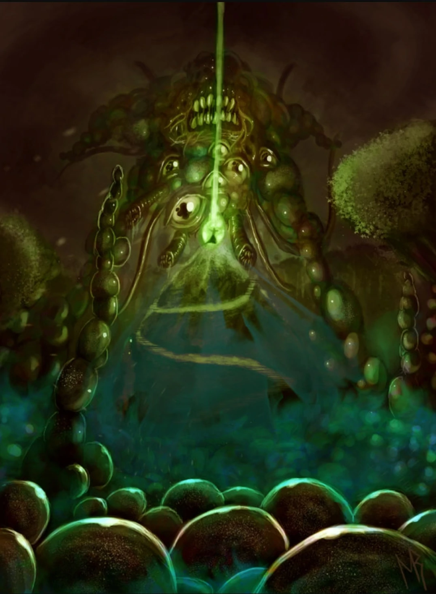

Este relato narra la historia de Wilbur Whateley, una persona que aterrorizaba a las personas de Duwich (Massachusets)por su fealdad, debido que era moreno y muy peludo, teniendo una cierta similitud con las cabras.
Su padre y abuelo lo entrodujeron en la majía negra y brujería.
El va ha intenntar leer el libro prohibido, el Necronomicón para llegar a Yog-Sothoth(personaje creado por Lovecraft)

Pera poder leerlo se va a dirigir a la universidad de Arkham para robar la única copia del libro, pero mientras roba el libro es sorprendido y asesinado por un perro que vigilaba el lugar.